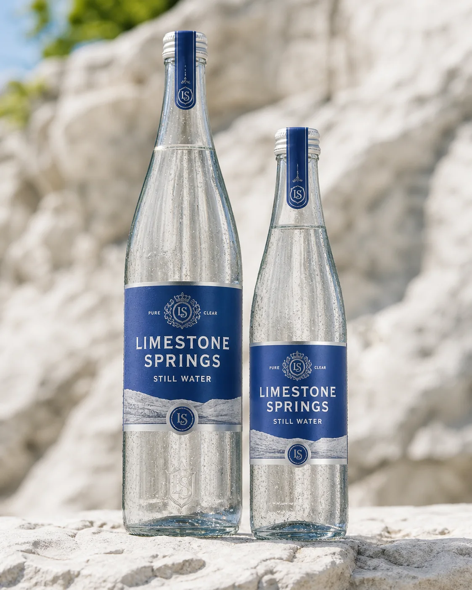
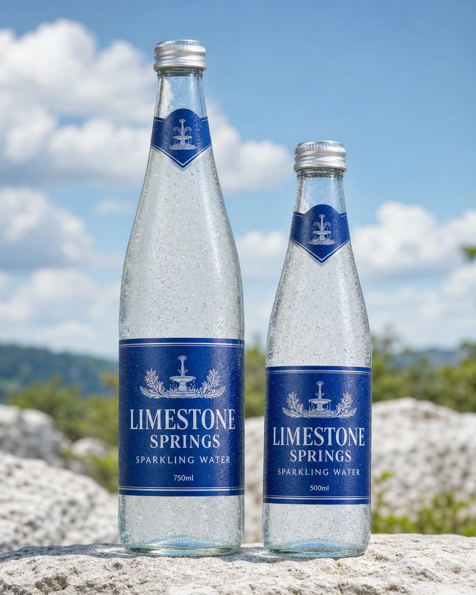
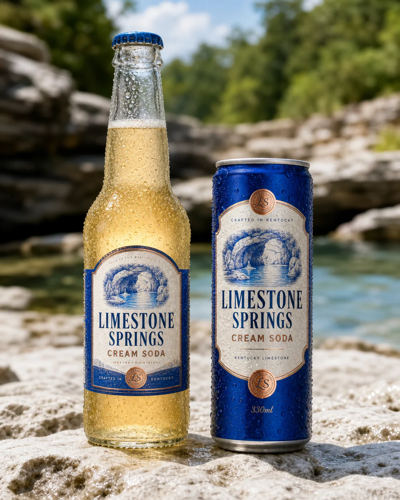

{kind=link}

Still Water
Served with meals and included in the overnight welcome. Simple, chilled water in the familiar blue-labelled bottle.
Frankfort, Kentucky · Water, sodas & mixers
The water on the table, the bottles in the welcome basket and a cold Cream Soda from the fridge: a little of Kentucky, wherever the day takes you.
Limestone Springs was founded in Frankfort, Kentucky, in 2002. Its full beverage range launched in 2015, building a business in waters, sodas and mixers around Kentucky limestone-filtered water.
Part of Hatfield Group within Walker Holdings, it has a life well beyond the family’s own venues. Its bottles travel through hotels, restaurants, cocktail bars, shops and airports in more than thirty countries.
At Albury, still and sparkling water sit alongside properly brewed Cream Soda, Alex’s favourite soft drink. The producer’s blue labels remain part of the table.

Served with meals and included in the overnight welcome. Simple, chilled water in the familiar blue-labelled bottle.

For the table or a long drink, and paired with still water in the welcome basket.

Properly brewed and best enjoyed cold. A regular Albury choice in its own right.
The wider range includes tonics, ginger beer and ginger ale, root beer, cola, lemon and blood-orange sodas. Browse the producer site for the range, or ask the team what is chilled at Albury.
{kind=link}
{kind=link}